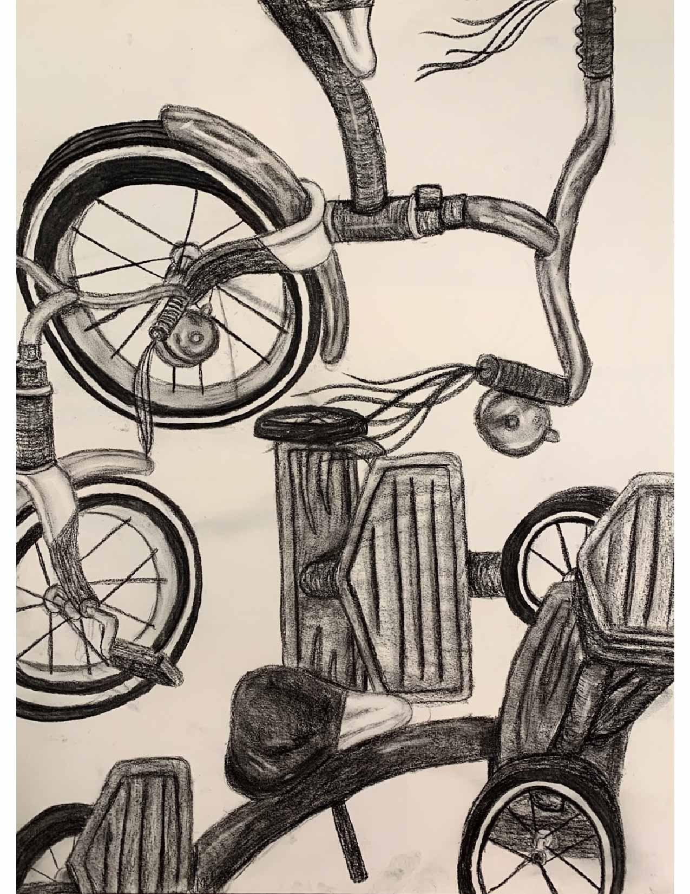
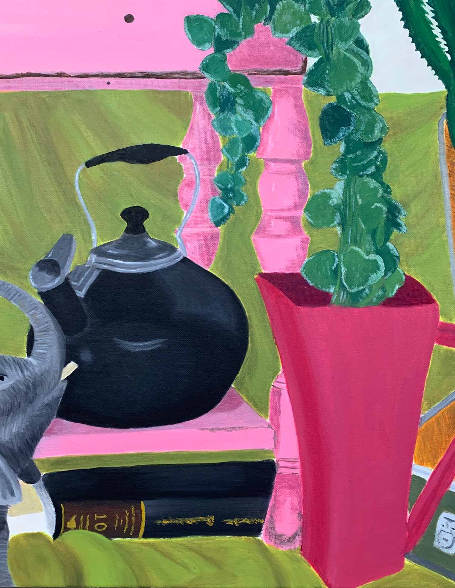
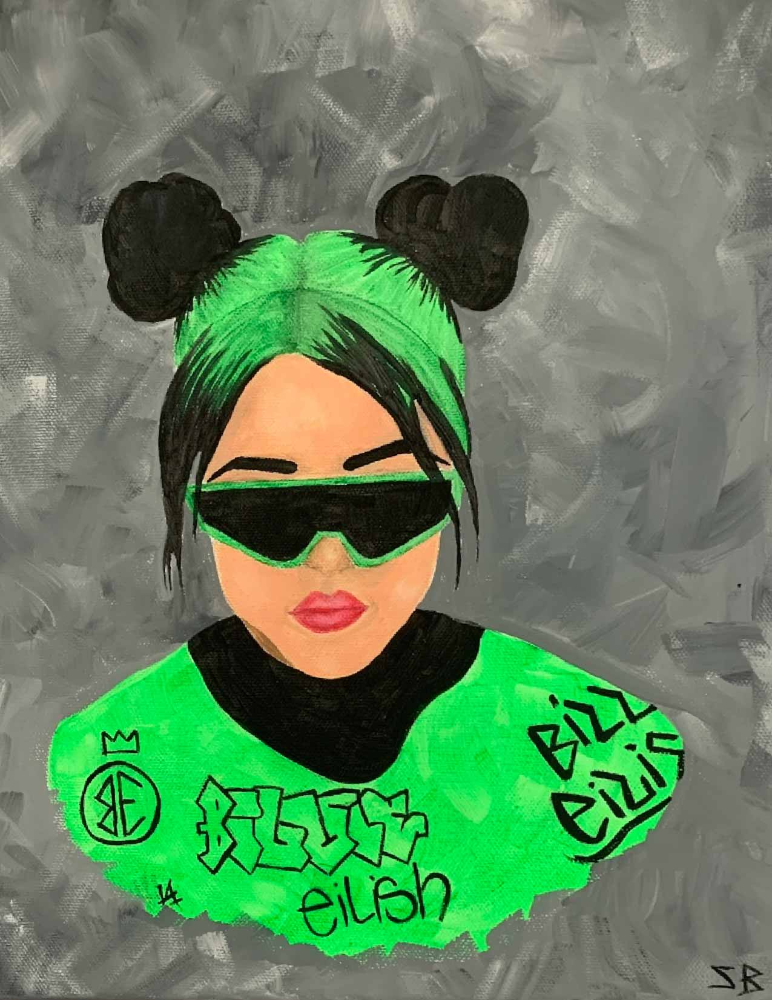
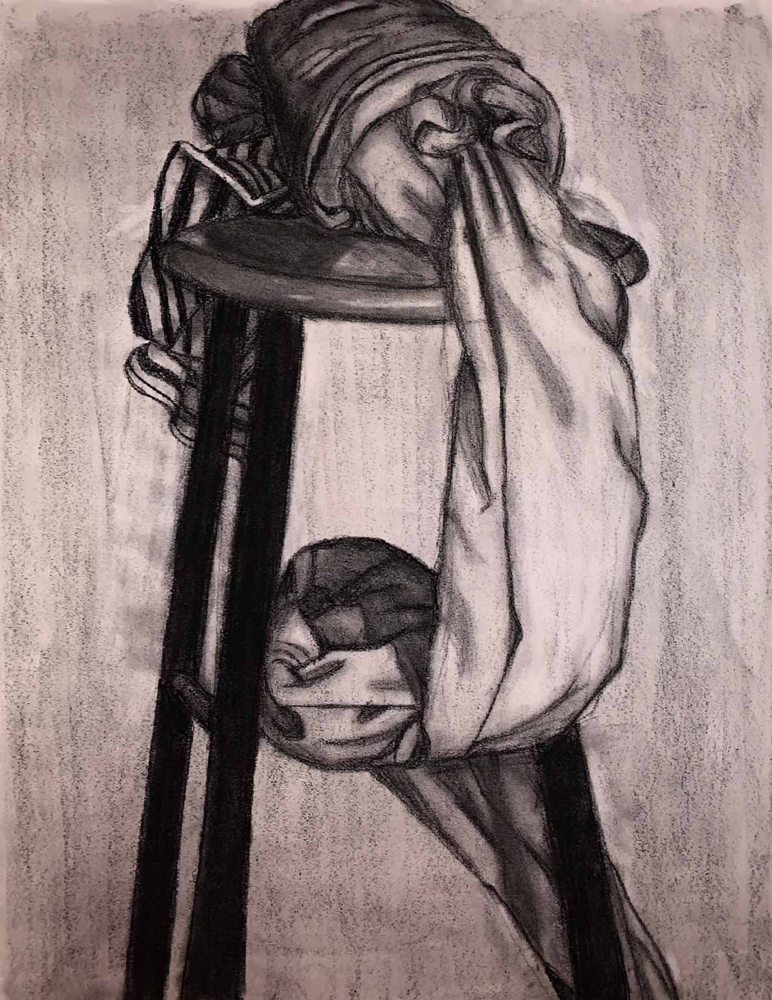
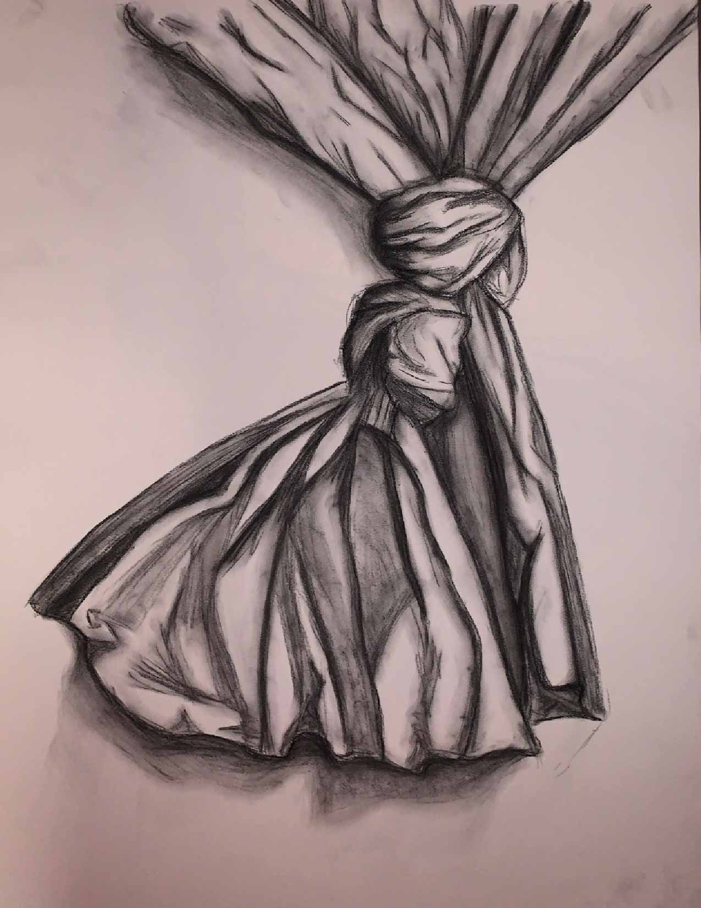
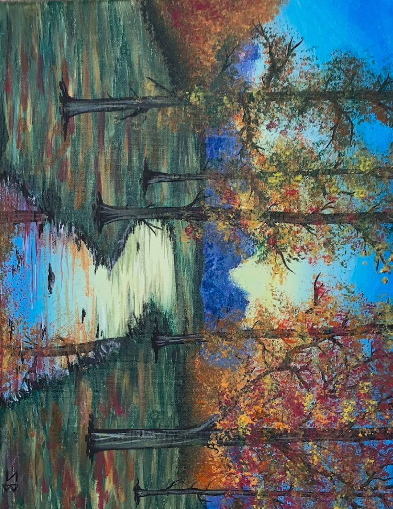
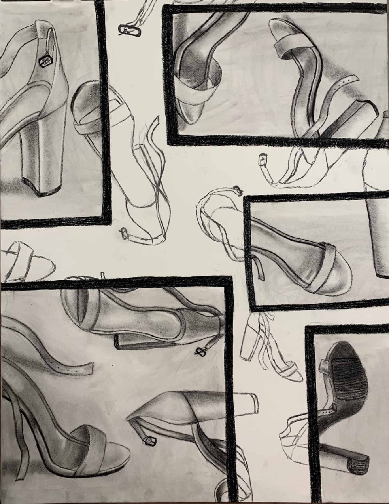
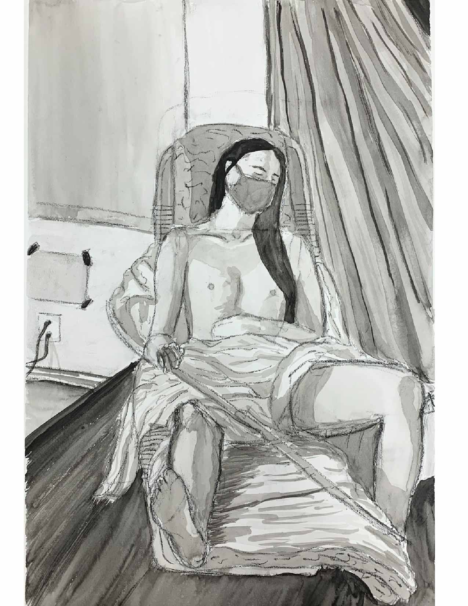
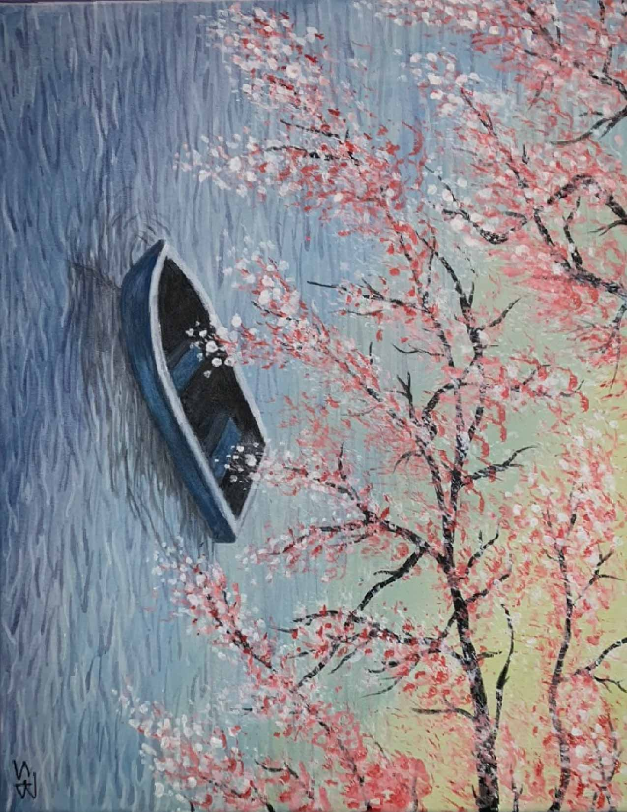
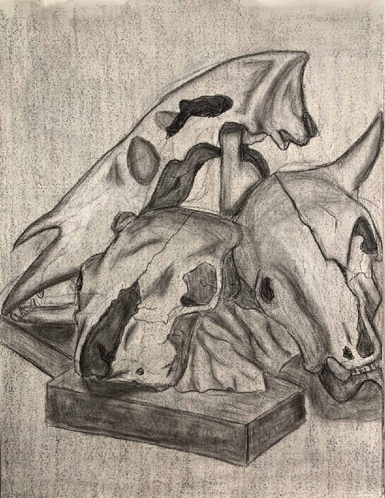

Shanna Baudier
Graphic Designer
About
My Work
All Work
Photography
Digital
Studio Art
Contact Me
Studio Art

This assignment was for my drawing & composition class, where I was asked to draw an object with different view-points on the same page.

This assignment was for my painting studio class, where I was asked to paint a cropped still-life scene.

This was a freetime painting I painted for my room. It is a painting of my favorite artist, Billie Eilish.

This was an assignment for my drawing & compisition class, where I drew a still-life scene of a wrapped sheet on top of a stool.

This was an assignment for my drawing & compisition class, where I drew a still-life scene of a knotted piece of paper.

This painting was a freetime painting I painted of a landscape forest scene.

This was an assignment for my drawing & compisition class, where I had to draw one shoe in different perspectives. We were also told to draw parts of the shoe less-developed than others.

This was an assignment for my figure drawing class, where I had to draw a still-life of a live model. We used ink and charcoal to create a drawing that focused on the curves and shapes of the human body.

This painting was a freetime painting I created of a row boat in a body of water with a cherry blossom tree above it.

This was an assignment for my drawing & compisition class, where I had to draw a still-life scene of a pile of animal skulls